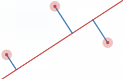

Number of neighbours:
This website is intended to help people in visualizing basic Machine Learning algorithms, such as Linear Regression and K-Nearest Neighbours.
To use this website you can upload your own data or click the graph to insert point into the graph.
Linear Regression is an algorithm to solve regression, curve-fitting problems. Essentially, given a set of datapoints, we want to know a line \(y=ax+b\) that best fits the data, as in having the least distance to all datapoints. Using this line, we will be able to predict numerical values. For instance, given a data about the prices of a house over the years, we will predict the future price of a house.
How do we know a line is good? We can use the error functions, such as the following: $$E = \sum_{i=0}^n (y_i - \bar{y_i})^2, \text{where }\bar{y_i}=ax_i+b$$ The difference between \(y_i\) and \(\bar{y_i}\) indicates the error between the actual value \(y\) and the predicted value \(\bar{y_i}\). There are also other error functions, such as the Mean Absolute Error (MAE), Mean Squared Error (MSE), etc. Naturally, it would be better to have less errors, so we aim to lessen such errors (the total length of the blue lines).
First of all, we will use the error function that was mentioned first previously. Through the process of variable substitution and deriving the error function, we will obtain these formulas in return: $$a=\frac{N(\Sigma x_j y_j) - (\Sigma x_j)(\Sigma y_j)}{N (\Sigma {x_j}^2) - (\Sigma x_j)^2}$$ $$b=\frac{(\Sigma y_j - a(\Sigma x_j))}{N}$$ By just simply plugging in the values, we can immediately obtain the line equation. However, this method is not the best method to be used. In the next section, we will discuss a much better alternative.
Since the MSE function technically forms a quadratic equation when we substitute \(\bar{y_i}\), $$E = \frac{1}{n}\sum_{i=0}^n (y_i - \bar{(ax_i + b)})^2$$ we can identify the lowest point of the graph, where the line yields the least error. However, to do this, we must gradually make descending steps throughout the gradients, hence the name. Though, how do we exactly do this? How large a step needs to be? How do we know when to stop?
K-Nearest Neighbours (KNN) is an algorithm to solve classification problems. For instance, we want to classify which animal is contained within an image. The general step is as follows: